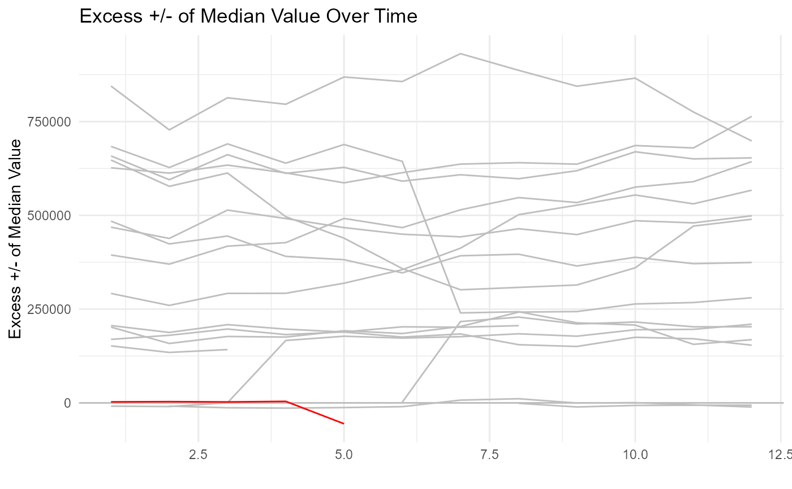

R/ts_median_excess_plt.R
ts_median_excess_plt.RdPlot out the excess +/- of the median value grouped by certain time parameters.
ts_median_excess_plt(
.data,
.date_col,
.value_col,
.x_axis,
.ggplot_group_var,
.years_back
)The data that is being analyzed, data must be a tibble/data.frame.
The column of the tibble that holds the date.
The column that holds the value of interest.
What is the be the x-axis, day, week, etc.
The variable to group the ggplot on.
How many yeas back do you want to go in order to compute the median value.
A ggplot2 plot
Supply data that you want to view and you will see the excess +/- of the median values over a specified time series tibble.
suppressPackageStartupMessages(library(timetk))
ts_signature_tbl(
.data = m4_daily
, .date_col = date
) %>%
ts_median_excess_plt(
.date_col = date
, .value_col = value
, .x_axis = month
, .ggplot_group_var = year
, .years_back = 1
)
#> pad applied on the interval: day
#> Joining, by = "month"
#> Warning: `guides(<scale> = FALSE)` is deprecated. Please use `guides(<scale> = "none")` instead.
#> Warning: Removed 261 row(s) containing missing values (geom_path).
